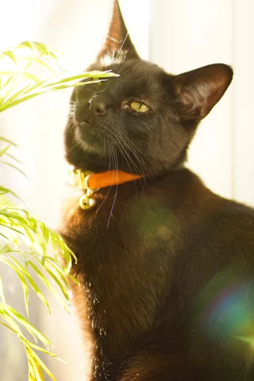
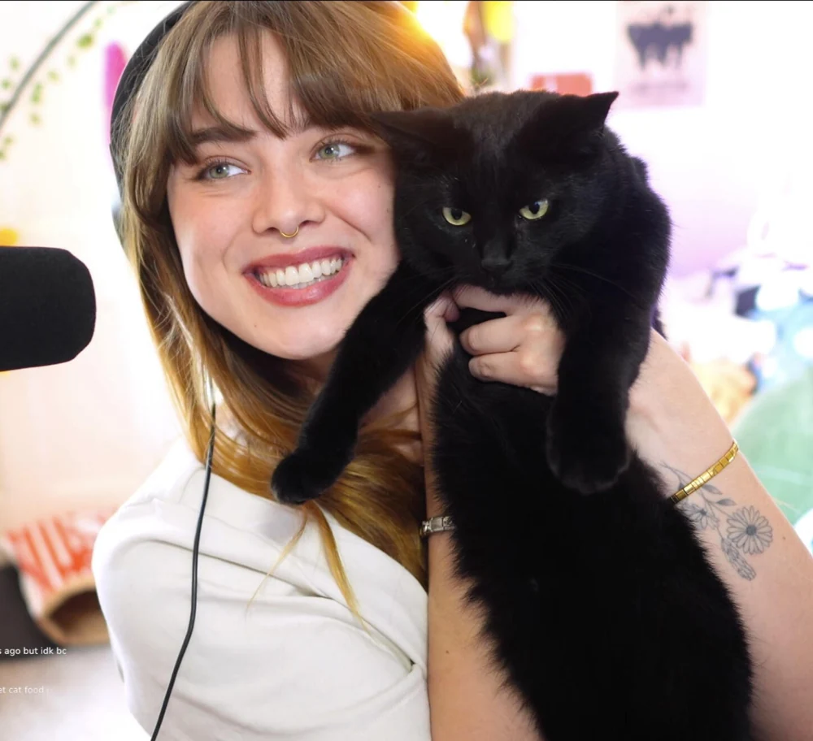
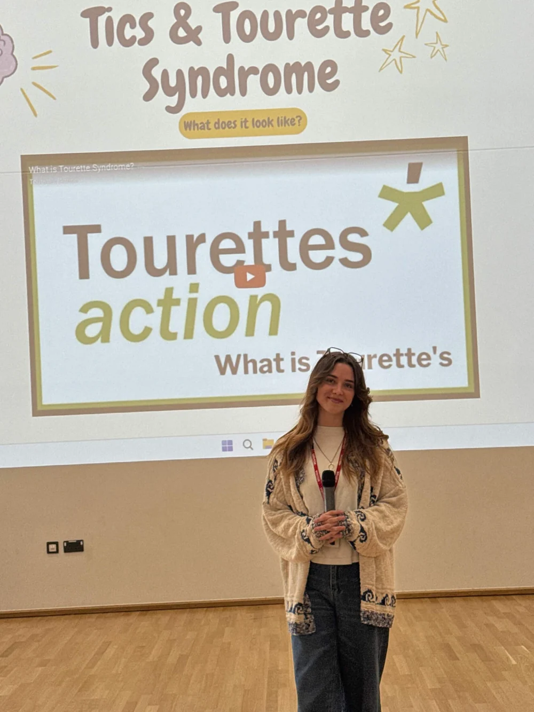
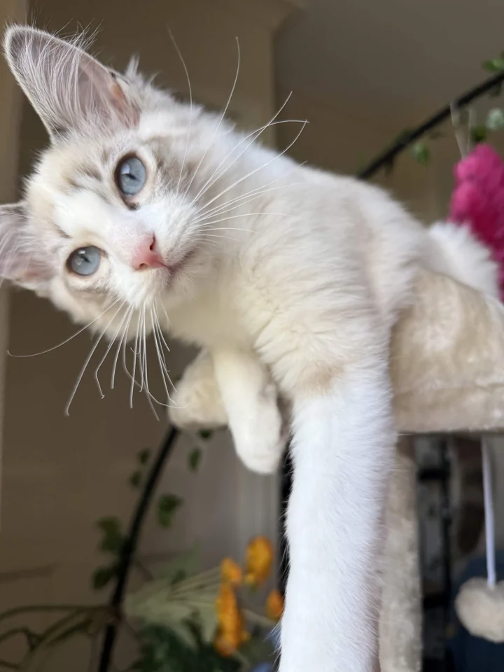
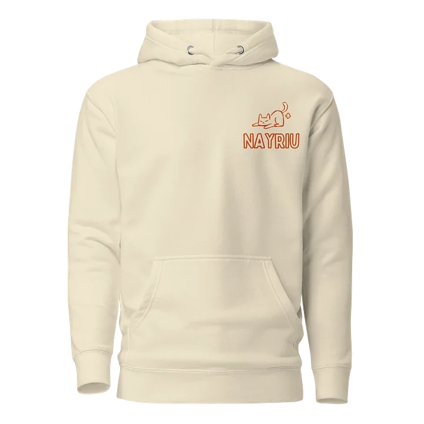
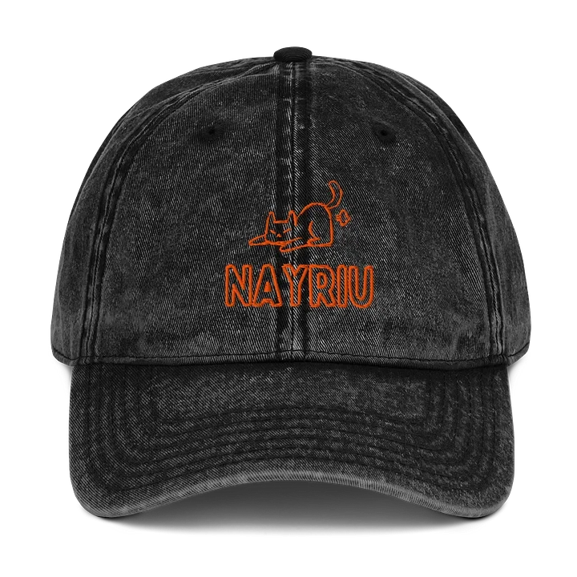
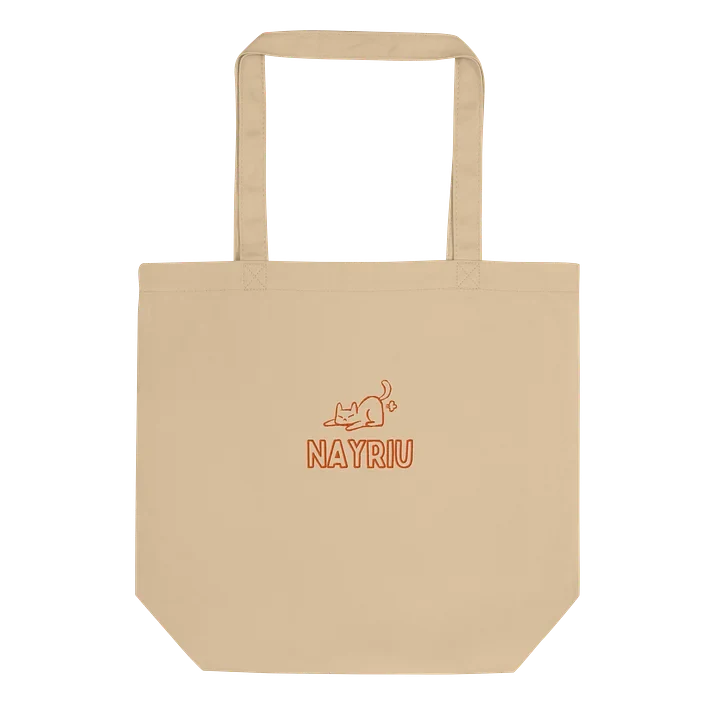

A little corner of the internet
Oh hey, I'm
naye.
/ neɪ / like a horse. yes, really.
Streamer. Tourette’s advocate.
Outnumbered by cats.

& this is Salem
Hello from
Scotland.
I’m Naye. I stream on Twitch, talk openly about living with Tourette’s, and share my home with Salem and Hamish. You’ll meet them in a minute.
Whether you’ve come over from a stream or you’re just meeting me, welcome. Have a look around, get comfy, and come say hello.
A little more of my storySee you on stream.
Pull up a chair, say hello, or just keep me
company. It’s always nice to see you.
Let’s talk
about Tourette’s.
My first tics started when I was six. Back then, they were mild enough that I went undiagnosed. I just thought I was “weird”.
Starting university in 2020 changed things. The stress of studying, moving away, and COVID made my tics much more severe. After two years of appointments, I was diagnosed with Tourette Syndrome in 2022.
Now I use my platform to help people understand it. That’s taken me from conversations on stream to visiting schools in the North East of England, talking with students and staff about tics and Tourette’s.
Watch my school assembly
Yes, they get their own section.
Meet the
management.
Salem has been causing havoc on stream for a while. Hamish is the newest member of the household.
Two cats. One very proud cat mum.
Salem, caught in the act
The good stuff.
Explore the whole shop
The Nayriu hoodie
Take a closer look ↗
The everyday cap
Take a closer look ↗
The take-everywhere tote
Take a closer look ↗All the merch lives over on my Fourthwall shop. Happy browsing.
Find me
elsewhere.
Stream moments, little updates, and
an unreasonable number of cat photos.
Feeling generous?
Being here already means a lot. If you’d like to give a little extra,
these are a few ways to support me.
Leave a tip
A little help with everyday life,
via StreamElements.
Buy me a coffee
Prefer Ko-fi? You’ll find me
over there, too.
Send a little gift
A few things I’ve had my eye on,
all on my Throne wishlist.
More of a letters-and-parcels person?
I have a post box for that. There’s a forwarding fee for me to receive letters and parcels, so please read the details before sending anything.
Post box details & forwarding information